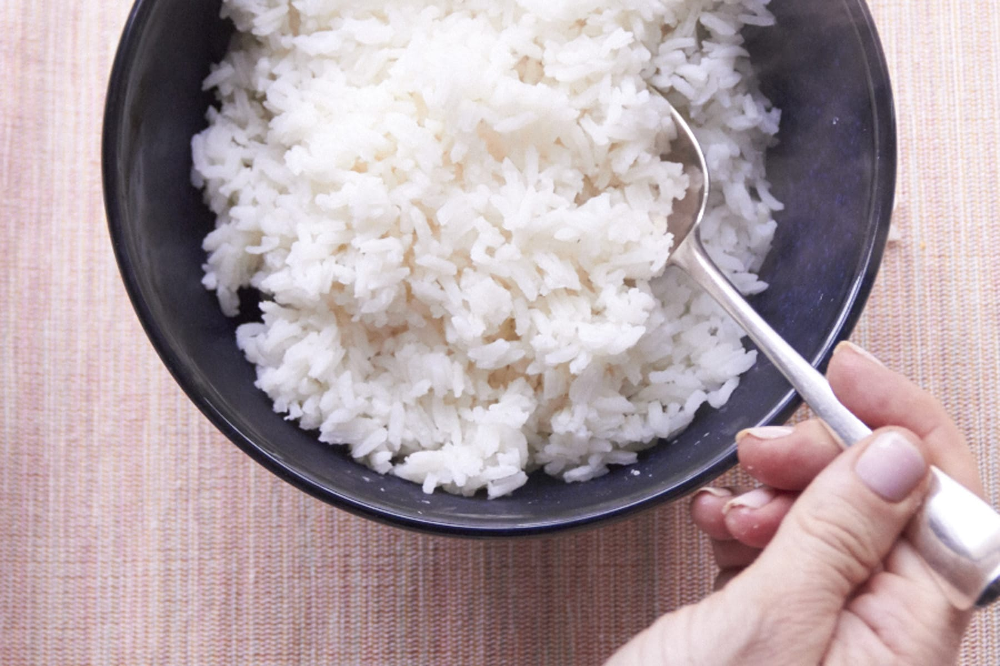

Rice

Cooked white rice
Ingredients
- 2 cups warm water
- 1 cup of white long grain rice
- 1 1/2 tablespoons butter
- 1 1/2 teaspoons salt
- 1/4 cup vegetable oil
STEPS
- RINSE THE RICE
- REMEMBER THE RATIO
- BRING WATER TO A BOIL
- ADD YOUR RICE, BUTTER AND A PINCH OF SALT
- BRING PAN TO A SIMMER THEN LOWER HEAT
- REMOVE FROM HEAT AND LET SIT